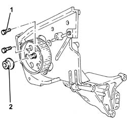
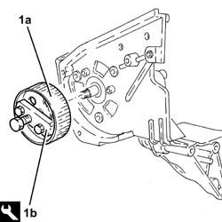
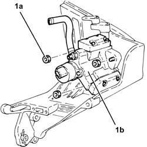
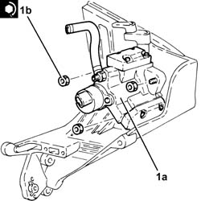
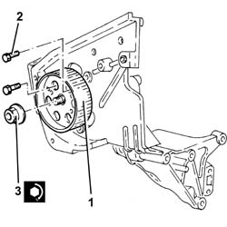

1060E42 SUPPLEMENTARY PRESSURE PUMP - DISMANTLE
- Path
- Procedures > 10 ENGINE UNIT > 1060 DIESEL INJECTION SYSTEM > 1060E DIESEL PRESSURE PUMP > 1060E42 SUPPLEMENTARY PRESSURE PUMP - DISMANTLE
- Kind
- repair procedure (removal / refitting; the operation number is the code)
- Applies to
- engines: 1.9 JTD 16V; all production periods
- Interactive page
- https://sloeber94.github.io/elrnDB-aGt/en/#/125001036
Applies to: engines: 1.9 JTD 16V; all production periods
 Removing
Removing
 Refitting
RefittingPlace the pressure pump mounting in a vice fitted with protective jaws.
1. Stop the pressure pump pulley from rotating using two bolts.
2. Undo the pressure pump pulley nut.
Undo the two bolts fitted previously to stop the rotation of the pressure pump pulley.

Applies to: engines: 1.9 JTD 16V; all production periods
1. Remove the pressure pump pulley (1a) using the tool (1b).
 | Name | Country |
|---|---|---|
1b | Extractor | 1.860.854.001 |

Applies to: engines: 1.9 JTD 16V; all production periods
1. Undo nuts (1a) and remove pressure pump (1b) from its mount.

Applies to: engines: 1.9 JTD 16V; all production periods
Refitting
Removing1. Fit pressure pump (1a) on the mount and secure by tightening the nuts (1b) to the specified torque.
 | Fastening | Component | Ø | Value (daNm) |
|---|---|---|---|---|
1b | - | - | - | - |

Applies to: engines: 1.9 JTD 16V; all production periods
1. Replace the pressure pump pulley in its housing.
2. Stop the pressure pump pulley from rotating using two bolts.
3. Tighten the pressure pump pulley nut to torque.
| Fastening | Component | Ø | Value (daNm) |
|---|---|---|---|---|
3 | - | - | - | - |
Undo the two bolts fitted previously to stop the rotation of the pressure pump pulley.
